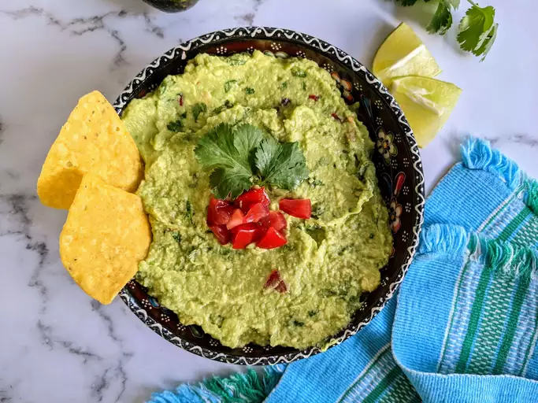

Guacamole

Guacamole
Guacamole is an avocado-based dip or spread that originated
in Mexico. It's typically made with mashed
avocado and lime
juice, then seasoned with salt and cilantro. Guacamole often
contains tomatoes and onions.
Restaurant-worthy guacamole is just a few ingredients away.
You'll be surprised how easy it is to make this
top-rated
guacamole recipe. You'll come back to it again and again!
This guacamole recipe gets a tasty kick from cayenne and cilantro.
You can serve it smooth or chunky
depending on your tastes.
Ingredients:
- Avocados: Of course, you'll need avocados!
- Lime: Lime juice adds brightness and slows down the browning
process.
- Salt: A teaspoon of salt enhances the flavors of the other
ingredients.
- Vegetables: You'll also need an onion and roma tomatoes.
- Herbs and spices: Fresh cilantro, minced garlic, and cayenne
pepper add tons of flavor.
Ingredients Measurement:
- 1 lime, juiced
- 1 teaspoon salt
- 2 roma (plum) tomatoes, diced
- ½ cup diced onion
- 3 tablespoons chopped fresh cilantro
- 1 teaspoon minced garlic
- 1 pinch ground cayenne pepper (Optional)
- 3 avocados - peeled, pitted, and mashed
Directions:
- Mash avocados, lime juice, and salt together in a medium bowl; mix in tomatoes,
onion, cilantro, and garlic. Stir in cayenne pepper.
- Serve immediately, or cover and refrigerate for 1 hour for improved flavor.